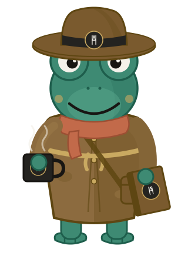

Sovereign Memory · Brand System · v1 draft · 2026-05-22
Individually ambiguous. Together, unmistakable.
A hat is just a hat. A mug is just a mug. Assemble them and you get a seasoned archivist. The system works the same way — only one element is allowed to be unambiguous: the HA mark.
The thesis
No single part carries the brand. The palette could belong to anyone. The frog could be any frog. The mono labels could be any terminal. The meaning lives in the assembly — and the one fixed point everything orbits is the maker's anchor.
The parts — ambiguous alone
A green could be any product
A mono label could be any CLI
A hat could be any explorer
A mug could be any morning
An eye could be any creature
The anchor — the only unambiguous element
H stems frame the A peak; one crossbar serves both letters. The verdigris node at the apexis the literal anchor — the single fixed, unambiguous point. It is a maker's mark, never the product logo. Reproduce it in solid ink or bone; never recolor the strokes.
Tokens — color
ink #181613
graphite #242320
bone #F4F1EA
verdigris #2F7D68
persimmon #D2603A
mustard #C9A961
blue #3D6F95
verdigris = safe / primary action · persimmon = warning · mustard = highlight · blue = info / links · sourced from DESIGN.md
Tokens — type
Display · Inter 720
Sovereign Memory
Body · Inter 420 · 15px
Memory should be layered state, not one flat blob. Identity is small and always present; knowledge is large and arrives in chunks, cited.
Label / Evidence · IBM Plex Mono 600
454 TESTS PASSING · 26 MCP TOOLS · MIT · NO TELEMETRY
Voice — constant across everything
We are
Honest about maturity
Technically grounded
Direct — first sentence carries weight
Skeptical by default — claims need evidence
Quietly confident · warm and earthy
We are not
Hype-driven or buzzword-y
Academic or dry
Blunt or dismissive
Cynical
Cute or whimsical
Assembled — the system speaking at once

The Frog Scholar
Earthy palette + explorer hat + journal + coffee + the HA roundel. None of it means anything alone. Together: a real person who reads the code, runs the tests, and built something worth trusting.
Usage — do / don't
✓ Do
Lead product surfaces with the wordmark + HA mark; keep the frog as a cameo or footer.
Put the full frog on your GitHub profile, social, and announcements.
Keep design docs and CLI output mark-free — clean is the point.
Reproduce the monogram in a single solid color.
✕ Don't
Treat the frog as the product logo or put it on technical docs.
Recolor the monogram strokes or stretch the proportions.
Pair the brand with hype words — "revolutionary," "AI-powered," "seamless."
Mix the retired gold-winged "Hermes" mark with this system.
BUILT BY HANS AXELSSON · HA · THE FROG SCHOLAR — palette & type sourced from DESIGN.md · marks live in /assets/brand/